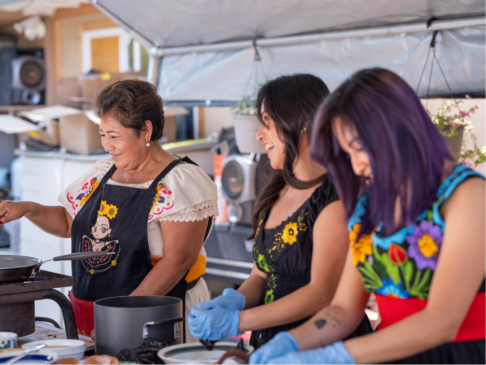
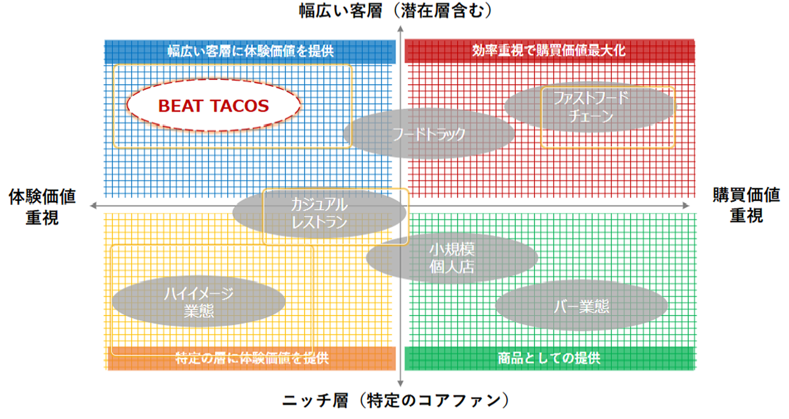
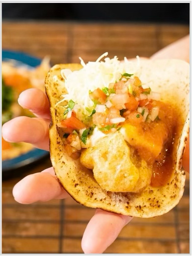
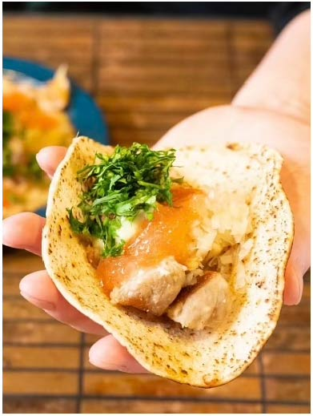
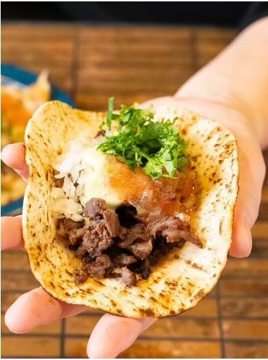
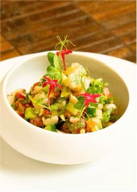
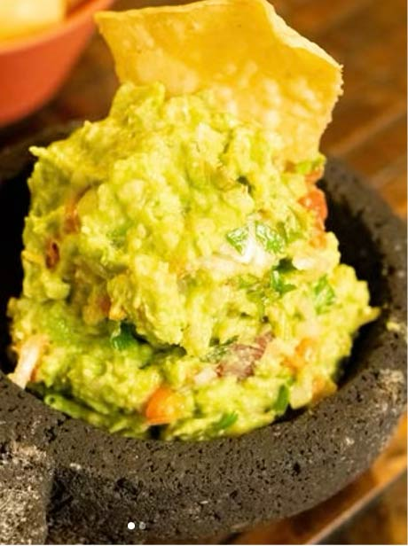
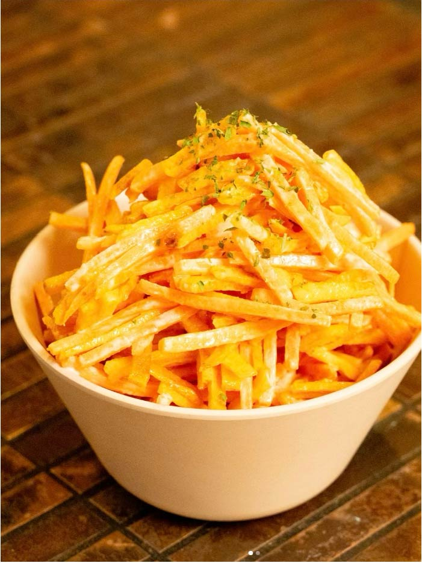
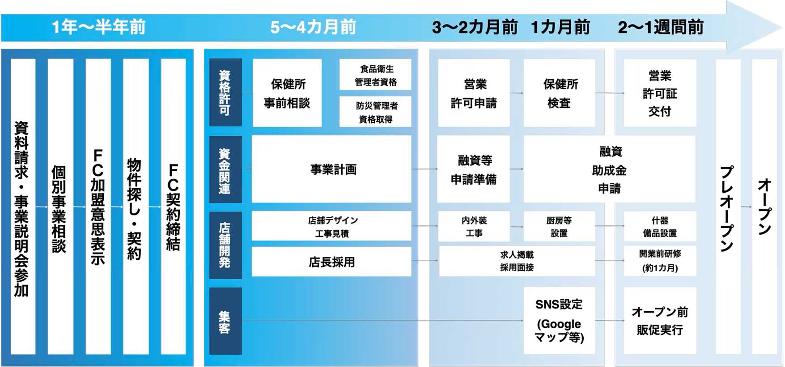

セントラルキッチン方式を採用し
現場の仕込み時間を短縮化
商品開発機能を保有し、本格タコスや
多品目メニューの提供が可能
幅広い客層とリピーターを獲得し
小商圏でも成立
地域コミュニティを意識した
マーケティング企画力
現地メキシコに20年間、足を運んで作り上げたタコス業界で

「ラテンのリズムと和の精神で、日本人の感性に寄り添うタコスを。」
日本とメキシコのカルチャーミックスにより誕生した
BEAT TACOSはタコスを通じて”団らん”と”地域の未来”を創ります。
競合が少ない成長分野で先行優位を築きたい方に最適です。
体験価値で選ばれ、安さに依存しない経営が可能です。
設計済みレシピで開発負担を減らし運営に専念できます。
ロイヤリティを抑え利益を残しやすい設計です。
既存店舗を活かし差別化できる業態へ転換可能です。
人の循環で売上を安定させる地域密着モデルです。
日本におけるメキシコ料理市場は小規模であるものの、市場規模が拡大傾向。
1店舗当たりの売上は増加傾向にあり、タコスが選択肢となりつつあります。
タコスをはじめとしたメキシコ料理独特の複雑な味は再現難易度が高く、
一定の参入ハードルがあります。
メキシカン料理を食べ慣れている外国人にとって、タコスは日常食です。
実際にインバウンドの方にも多くご来店をいただいております。
競争環境が激化する日本の外食市場で、
ブルーオーシャン業態に参入できるチャンス!!
そこでBEAT TACOS はレシピと運営ノウハウをパッケージ化し、
タコスで地域を盛り上げたい法人・個人様を手厚くサポートする体制を整えました。
ー幅広い客層を取り込める高収益業態ー
メキシカン市場はまだまだ外食市場全体で第一想機業態ではなく、
潜在顧客層が多く存在する市場です。（特定のコアファンが市場を形成）
また、タコスを単なる商品として提供することが日本国内においては主流です。（購買価値重視）
BEATTACOSは、タコスをツールに、より幅広い層へメキシコの文化体験価値を届けるメキシカン料理店です。

セントラルキッチン方式を採用し
現場の仕込み時間を短縮化
商品開発機能を保有し、本格タコスや
多品目メニューの提供が可能
幅広い客層とリピーターを獲得し
小商圏でも成立
地域コミュニティを意識した
マーケティング企画力
セントラルキッチン方式を採用し、
現場の仕込み時間を短縮化する省人化モデル
飲食店の
一般的な人件費率
30〜35%
6時間以上の
仕込み工数削減で
人件費を抑制!
BEAT TACOSの
人件費率
25〜30%
グループが保有するセントラルキッチンにて、肉の加工およびソース
の製造を行っています。これにより、仕込みの時間が
6時間程度軽減され、人件費の大幅削減につながっております。
商品開発機能を保有し、
本格タコスや多品目メニューの提供が可能

当店大人気の
バハフィッシュタコス。
ルーツは日本の天麩羅。
出来たてフィッシュフライは外
は"カリッ"中は"ジュワ"

豚バラの旨みをラードで
コトコト煮込み旨みを凝縮。
ガッツリ食べたい方へオススメ
の一品。

このひと手間が美味しさの秘密！
お子様や苦手な方向けに、NO
スパイス・NO パクチーご用意
可能です。
ガッツリタコスを召し上がり🌮

エビ、タイ、タコ、新鮮なお野
菜をライムで〆る。
お酒の相性良し
メインでも良し

メキシコ料理の定番といったら
これ！
アボカドを丸々ひとつ使った一
品。フレッシュな味付けでほか
の野菜との相性抜群です。チッ
プスにつけて召しあがれ！！

人参とお菓子のカラムーチョに
特製ソースを掛け合わせた一品
です。人参の食感とカラムー
チョの旨辛がやみつきに！！
幅広い客層とリピーターを獲得し
小商圏でも成立
| ターゲット例 | 利用シーン例 | 提供コンテンツ |
|---|---|---|
| 団体客 | 宴会 | 充実したアルコールメニュー |
| 在日・インバウンド | 故郷の味・文化体験 | 本場の味を再現したタコス |
| 個人 | 仕事帰りの一杯 | 気軽に寄れるカウンター |
| カップル | デート | お祝いもできるコースメニュー |
| ファミリー | 時々の外食 | シェアを楽しめるメニュー |
| 学生 | ホームパーティー | テイクアウトメニュー |
様々な利用シーンに対応可能な商品で
幅広い客層を取り込みつつ、リピート利用も促進
地域コミュニティを意識した
マーケティング企画力
HOOKからCULTUREへ。一気通貫で設計されたコミュニティ醸成システム。
BEAT TACOSではフリーネーム制度を採用し、オーナー様の好きな店名・ロゴで開業いただけます。
そのため、看板料やブランド料は必要ございません。
オーナー様の利益を最大化するリーズナブルな加盟金ロイヤリティ設定で、事業運営の負担を最小限にした
フランチャイズモデルをご用意いたしました。
| 項目 | 費用 | 備考 |
|---|---|---|
| 店舗取得費 | ￥450,000 | 駐車場代含む |
| 建築費 | ￥16,000,000 | 解体、スケルトン、修繕※32坪の場合 |
| 厨房・レジ機器類 | ￥6,500,000 | 調理器具、お皿、グラス、レジ等 |
| システム利用料 | ￥300,000 | POSシステム、勤怠システム |
| 加盟金 | ￥2,000,000 | マニュアル提供・研修費充当・開業支援 |
| 合計 | ￥25,250,000 | - |
| モデル月商 | ||
|---|---|---|
| 値 | 構成比 | |
| 売上 | ￥5,000,000 | 100% |
| 食材原価 | ￥1,500,000 | 30.0% |
| 粗利 | ￥3,500,000 | 70.0% |
| 販売管理費 | ￥2,500,000 | 50.0% |
| 人件費 | ￥1,500,000 | 30.0% |
| 家賃 | ￥150,000 | 3.0% |
| 減価償却 | ￥150,000 | 3.0% |
| 水光熱費 | ￥150,000 | 3.0% |
| 広告宣伝費 | ￥150,000 | 3.0% |
| ロイヤルティー | ￥150,000 | 3.0% |
| システム利用料 | ￥150,000 | 3.0% |
| その他 | ￥150,000 | 3.0% |
| （償却前）営業利益 | ￥1,000,000 | 20.0% |
| サポートテーマ | サポート内容 | ||
|---|---|---|---|
| 1 | 出店支援 |
▶ 立地・物件診断 |
直営店の出店実績をもとに「成功確率の高い物件の見極め」をサポート致します。 |
|
▶ 店舗設計支援 |
また、店舗設計についても、FC本部より仕様をご提供させていただきます。 |
||
| 2 | 人材育成 支援 |
▶ 開業前研修 |
開業前に直営店で21日の研修（座学＆実店舗勤務）を実施し、店長スキルを習得いただきます。 |
|
▶ 店長会議への出席 |
店長会議への参加を通じて、店舗経営力向上のための事例・ノウハウを学んでいただきます。 |
||
| 3 | 商品提供 |
▶ レシピ |
メニュー及びレシピは全て直営店よりご提供させていただきます。 |
|
▶ 食材供給 |
なお一部の食材は本部の関連会社が一括で製造し加盟店様へ提供することで、仕込み時間の短縮が可能です。 |
||
| 4 | 集客支援 |
▶ イベント企画サポート |
加盟店様ごとに地域向けイベントの企画提案および実行支援を実施いたします。 |
| 5 | 経営支援 |
▶ 事業計画策定 |
FC加盟時に、直営店で使用している店舗運営マニュアル一式をご提供させていただきます。 |
|
▶ SVによる現場指導 |
SVは初年度は臨店し、開業前後の確認から現場改善や、イベント伴走まで、安定運営に向けて伴走型サポートを行います。 |
||
加盟金 = ￥2,000,000
ロイヤルティ=売上に対して3%

よくあるご質問
飲食未経験でも問題ございません。当社では店舗オペレーションのノウハウを体系化した研修プログラムをご用意しておりますので、ご安心ください。また開業後も当社のスーパーバイザーが臨店し、アドバイスを実施いたします。
PA募集の採用媒体のご紹介や、直営で実施している募集文面のご共有が可能です。併せて適正な人員体制か？定期的に確認させていただきシフトコントロールも含め、アドバイスいたします。
候補物件は加盟希望者様よりご提示いただき、本部にて収益が担保できる基準をもとに可否診断を実施いたします。有望な物件である場合には現地調査も実施し、最終的な出店可否をお伝えいたします。
マニュアル化されたメニューの為、加盟店は”職人不要”で誰でも本場の味を再現可能です。また、やまとグループの商品開発力を活かして継続的に新商品を開発可能です。
金融機関への融資申請サポートを実施いたします。ただし加盟希望者様には、自己資金として最低500万円をご用意いただいております。
BEAT TACOS 小松本店にて実施いたします。期間は3週間前後となりますので、ご予定の確保をお願いいたします。主に❶ホールオペレーション❷システム運用❸キッチンオペレーションのレクチャーをいたします。なお、交通費・宿泊費は実費となります。人数は2名まで受け入れ可能です。